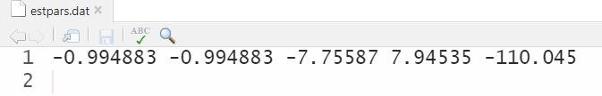
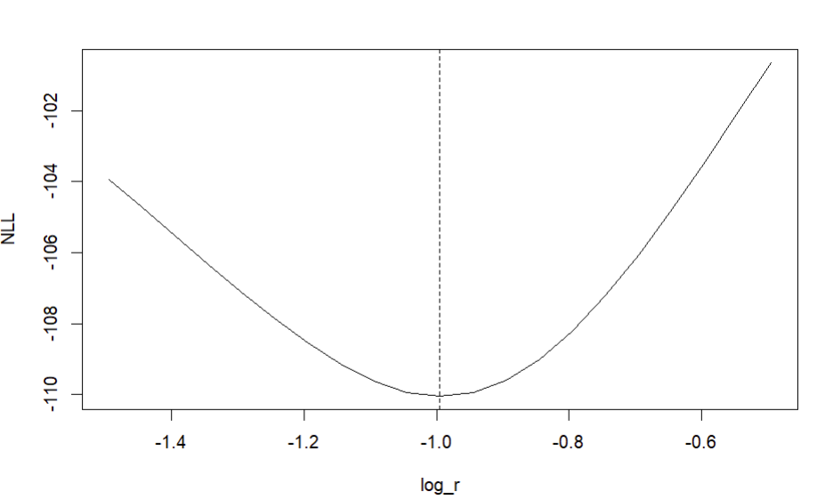
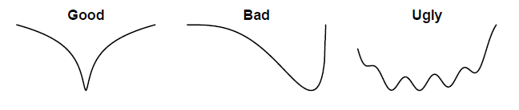

DATA_SECTION
!! ad_comm::change_datafile_name("surp_prod1.dat");
init_int fyear;
init_int lyear;
init_vector cat(fyear,lyear);
init_vector cpue(fyear,lyear);
PARAMETER_SECTION
init_number log_r;
init_number log_q;
init_number log_K;
init_number log_sd_cpue;
init_vector log_F(fyear,lyear);
number r;
number q;
number K;
number sd_cat;
number sd_cpue;
vector bio(fyear,lyear+1);
vector cat_hat(fyear,lyear);
vector cpue_hat(fyear,lyear);
vector expl_out(fyear,lyear);
vector F(fyear,lyear);
objective_function_value jnll;
INITIALIZATION_SECTION
log_r -0.6
log_q -1
log_K 8.5
log_sd_cpue -1
log_F 1
PROCEDURE_SECTION
int t;
dvariable expl;
// Convert from log to normal space
r = mfexp(log_r);
q = mfexp(log_q);
K = mfexp(log_K);
F = mfexp(log_F);
sd_cat = 0.05;
sd_cpue = mfexp(log_sd_cpue);
// Project the model forward
bio(fyear) = K;
for (t=fyear; t<=lyear; t++) {
expl = 1.0/(1.0+F(t));
bio(t+1) = bio(t) + r*bio(t)*(1.0-bio(t)/K) - expl*bio(t);
cat_hat(t) = expl * bio(t);
expl_out(t) = expl;
cpue_hat(t) = q * bio(t);
}
// Compute the likelihoods
jnll = 0;
for (t=fyear; t<=lyear; t++) {
jnll += 0.5 * square(log(cat(t)/cat_hat(t)) / sd_cat) + log(sd_cat);
jnll += 0.5 * square(log(cpue(t)/cpue_hat(t)) / sd_cpue) + log(sd_cpue);
}
GLOBALS_SECTION
#include <admodel.h>
#include <admb2r.cpp>
REPORT_SECTION
open_r_file("out.rdat", 6, -999);
wrt_r_complete_vector("obs_cat", cat);
wrt_r_complete_vector("obs_cpue", cpue);
wrt_r_complete_vector("est_bio", bio);
wrt_r_complete_vector("est_cat", cat_hat);
wrt_r_complete_vector("est_cpue", cpue_hat);
wrt_r_complete_vector("est_expl", expl_out);
wrt_r_item("jnll", jnll);
close_r_file();
FINAL_SECTION
// extract Hessian matrix
open_r_file("hessian.rdat");
open_r_matrix("hessian");
wrt_r_matrix(get_hessian(),1,1);
close_r_matrix();
close_r_file();Likelihood profiling in ADMB using R
A likelihood profile will show how the objective function changes as one of the parameters is fixed across a range of values while estimating the other parameters. This helps evaluate which parameters are informative, measure the amount of information contained in the data, and check the sensitivity (i.e., the consequence of using a fixed value) of the model result to the choice of the parameters. This does not need to be conducted on all model parameters, but this should be done on important leading parameters at minimum.
This tutorial will walk through how to conduct a likelihood profile with ADMB models. The fastest way to run a likelihood in ADMB is to run it through the R environment, which will create an executable and run ADMB with the executable so you do not need to manually change the initial parameter values each iteration. However, this will require some extra steps to set up your code in both ADMB and R.
1 admb2r.cpp instructions
This tutorial requires this package called “admb2r”. This is a collection of AD Model Builder routines for saving complex data structures into a file that can be read into R. This cannot be automatically downloaded in the newer ADMB versions. You can keep a “admb2r.cpp” file where your .tpl and .dat files are, however that requires copying and pasting it every time you want to run a ADMB model.
These are instructions for using admb2r.cpp permanently. Copy admb2r.cpp to both the following folders:
admb/include
admb/include/contrib
A copy of admb2r.cpp is here. Once this is done you will not need to add admb2r.cpp to every project folder. This has been tested on Linux Mint, Windows, and Mac.
2 Set up ADMB
If possible, you should download the most recent ADMB version here. This recent version will print out additional error messages and allow you to run additional functions (like get_hessian()).
2.1 Surplus production model - .tpl and .dat files
In this tutorial, we will look at a surplus production model. The .dat file name is called surp_prod1.dat. You can name the .tpl file anything, but in this tutorial, it will be called surp_prod_jitter.tpl.
This tutorial will not go through the surplus production model in details, but the leading parameters are \(r\), \(K\), \(q\), \(F\), and \(sd_{cpue}\). Note that there is a standard deviation for the catch observations, but that is fixed in this model (\(sd_{catch}\) = 0.05) The objective function (jnll) is the total objective function, which is the sum of the data likelihood for catch and index (CPUE) data, which follow a log normal distribution.
The default data file name is different than the .tpl file name. This is done using this command:
!! ad_com::change_datafile_name("surp_prod1.dat");The data will be read from surp_prod1.dat. This is useful when you have many variants of the model that use the same data. This trick will be useful for the jitter test.
You can copy and paste the surp_prod1.dat here:
# first year
1965
# last year
1988
# Catch
93.51
212.444
195.032
382.712
320.43
402.467
365.557
606.084
377.642
318.836
309.374
389.02
276.901
254.251
170.006
97.181
90.523
176.532
216.181
228.672
212.177
231.179
136.942
212
# Index
1.78
1.31
0.91
0.96
0.88
0.9
0.87
0.72
0.57
0.45
0.42
0.42
0.49
0.43
0.4
0.45
0.55
0.53
0.58
0.64
0.66
0.65
0.61
0.632.2 DATA_SECTION
In the surplus production example, we will do a likelihood profile on \(r\).
!! ad_comm::change_datafile_name("log_r.dat");
init_number inlog_r;This is similar to the previous command, but here the !! ad_com::change_datafile_name("log_r.dat") command is reading the value of \(r\) (inlog_r) from separate .dat files. This will be important in the R script as you can rewrite this .dat file to produce different starting values that will be read in ADMB one at a time. Note that the parameter name that is being read in (inlog_r) should be different than the one in the PARAMETER_SECTION (the ones being used in the estimation; log_r).
The entire DATA_SECTION will look like this:
DATA_SECTION
!! ad_comm::change_datafile_name("log_r.dat");
init_number inlog_r;
// !! ad_comm::change_datafile_name("log_K.dat");
// init_number inlog_K;
// !! ad_comm::change_datafile_name("log_q.dat");
// init_number inlog_q;
// !! ad_comm::change_datafile_name("log_sd_cpue.dat");
// init_number inlog_sd_cpue;
!! ad_comm::change_datafile_name("surp_prod1.dat");
init_int fyear;
init_int lyear;
init_vector cat(fyear,lyear);
init_vector cpue(fyear,lyear);Note that the code to read in other parameter values from a .dat file (\(K\), \(q\), and \(sd_{cpue}\)) are commented out, but if you want to conduct a likelihood profile for those parameters, then those lines of code will need to be uncommented. However, you can only conduct a likelihood profile on one parameter at a time so be aware of which parameter is being read in here.
2.3 PARAMETER_SECTION
In this section, we will be fixing log_r so that ADMB will not estimate it, but use the value that is being read in from the “log_r.dat” file. Usually, we would write init_number log_r; to estimate log_r, however this will be commented out:
// init_number log_r; // fixing log_r
init_number log_q;
init_number log_K;
init_number log_sd_cpue;
init_vector log_F(fyear,lyear);The other parameters (\(q\), \(K\), \(sd_{cpue}\), and \(F\)) will still be estimated. We will also rewrite the starting parameter values declared in the INITIALIZATION_SECTION. This is why the parameter names above (inlog_r) needs to be different than the ones (log_r) being declared:
!! log_r = inlog_r;This will now read what was stored in the respective .dat files as the starting value of the parameter.
The entire PARAMETER_SECTION will look like this:
PARAMETER_SECTION
// init_number log_r;
init_number log_q;
init_number log_K;
init_number log_sd_cpue;
init_vector log_F(fyear,lyear);
number log_r; // fixed parameter here
number r;
number q;
number K;
number sd_cat;
number sd_cpue;
vector bio(fyear,lyear+1);
vector cat_hat(fyear,lyear);
vector cpue_hat(fyear,lyear);
vector expl_out(fyear,lyear);
vector F(fyear,lyear);
objective_function_value jnll;
!! log_r = inlog_r;
// !! log_K = inlog_K;
// !! log_q = inlog_q;
// !! log_sd_cpue = inlog_sd_cpue;2.4 INITIALIZATION_SECTION
The parameter you are profiling should not be in this section (either commented out or deleted) as the .dat file for each parameters will override the starting value for that parameter. This is important for the likelihood profile to work, so the entire INTIALIZATION_SECTION will look like this:
INITIALIZATION_SECTION
// log_r -0.6
log_q -9
log_K 8.5
log_F 1The next sections (PROCEDURE_SECTION, GLOBALS_SECTION, and REPORT_SECTION) should be the same as the original model.
2.5 FINAL_SECTION
In the final section, you will need to add a command to define an output file stream, write the output, and close the output file. This is using the functionality of “admb2r”. The entire FINAL_SECTION will look like this:
FINAL_SECTION
ofstream myout("estpars.dat",ios::app);
myout<< inlog_r << " " << log_r << " " << log_q << " " << log_K << " " << jnll << endl;
myout.close();The “estpars.dat” file will eventually contain all the starting values of \(r\) from R, estimated parameters from ADMB, and the objective function from ADMB. This is important as it will contain all the iterations and results of the jitter test and will be read into R as a table. Note that the value of inlog_r should be the same as log_r as \(r\) is being fixed in the model.
2.6 Entire ADMB example of the surplus production model
Here is the entire ADMB script for an example of conducting a likelihood profile with the surplus production model.
DATA_SECTION
!! ad_comm::change_datafile_name("log_r.dat");
init_number inlog_r;
// !! ad_comm::change_datafile_name("log_K.dat");
// init_number inlog_K;
// !! ad_comm::change_datafile_name("log_q.dat");
// init_number inlog_q;
// !! ad_comm::change_datafile_name("log_sd_cpue.dat");
// init_number inlog_sd_cpue;
!! ad_comm::change_datafile_name("surp_prod1.dat");
init_int fyear;
init_int lyear;
init_vector cat(fyear,lyear);
init_vector cpue(fyear,lyear);
PARAMETER_SECTION
// init_number log_r;
init_number log_q;
init_number log_K;
init_number log_sd_cpue;
init_vector log_F(fyear,lyear);
number log_r; // fixed parameter here
number r;
number q;
number K;
number sd_cat;
number sd_cpue;
vector bio(fyear,lyear+1);
vector cat_hat(fyear,lyear);
vector cpue_hat(fyear,lyear);
vector expl_out(fyear,lyear);
vector F(fyear,lyear);
objective_function_value jnll;
!! log_r = inlog_r;
// !! log_K = inlog_K;
// !! log_q = inlog_q;
// !! log_sd_cpue = inlog_sd_cpue;
INITIALIZATION_SECTION
// log_r -0.6
log_q -9
log_K 8.5
log_F 1
PROCEDURE_SECTION
int t;
dvariable expl;
dvariable sum_sq;
// Convert from log to normal space
r = mfexp(log_r);
q = mfexp(log_q);
K = mfexp(log_K);
F = mfexp(log_F);
sd_cat = 0.05;
sd_cpue = mfexp(log_sd_cpue);
// Project the model forward
bio(fyear) = K;
for (t=fyear; t<=lyear; t++) {
expl = 1.0/(1.0+F(t));
bio(t+1) = bio(t) + r*bio(t)*(1.0-bio(t)/K) - expl*bio(t);
cat_hat(t) = expl * bio(t);
expl_out(t) = expl;
cpue_hat(t) = q * bio(t);
}
// Compute the likelihoods
jnll = 0;
for (t=fyear; t<=lyear; t++) {
jnll += 0.5 * square(log(cat(t)/cat_hat(t)) / sd_cat) + log(sd_cat);
jnll += 0.5 * square(log(cpue(t)/cpue_hat(t)) / sd_cpue) + log(sd_cpue);
}
GLOBALS_SECTION
#include <admodel.h>
#include <admb2r.cpp>
REPORT_SECTION
open_r_file("out.rdat", 6, -999);
wrt_r_complete_vector("obs_cat", cat);
wrt_r_complete_vector("obs_cpue", cpue);
wrt_r_complete_vector("est_bio", bio);
wrt_r_complete_vector("est_cat", cat_hat);
wrt_r_complete_vector("est_cpue", cpue_hat);
wrt_r_complete_vector("est_expl", expl_out);
wrt_r_item("jnll", jnll);
close_r_file();
FINAL_SECTION
ofstream myout("estpars.dat",ios::app);
myout<< inlog_r << " " << log_r << " " << log_q << " " << log_K << " " << jnll << endl;
myout.close();The next step is to set up a R script to run the likelihood profile.
3 Set up R
3.1 Add ADMB to your environment
The R script should work on all computer environments (Windows, Mac, Linux) as long as ADMB is properly setup. These are the instructions for each system:
Linux Mint (probably most other Linux):
- add this line to the end of .profile in Home directory:
export PATH=~/admb:$PATH
Mac
- add this line right before “export PATH” at end of .zprofile in Home directory:
PATH="~/admb:${PATH}"
Windows:
- In System Environment Variables, add
C:\ADMB-13.2\\binto Path
3.2 R helper functions
You will need these helper files to run ADMB through R:
base_funs.r - this contains three functions to read and compile a ADMB executable and run the ADMB model
compile_admb()read_admb()run_admb()
clean_admb.r - after you are done running your model, this will clean all the additional ADMB files in your directory.
You can also run this in R to download these files directly to your local directory:
download.file("https://raw.githubusercontent.com/lidach/addtools/main/R/base_funs.r", destfile = "base_funs.r")
download.file("https://raw.githubusercontent.com/lidach/addtools/main/R/clean_admb.r", destfile = "clean_admb.r")
These helper functions will be loaded in R using the source() function (make sure these are in the same directory as the .tpl and .dat files):
source("base_funs.r")
source("clean_admb.r")3.3 Compile and run ADMB in R
The R helper functions (base_funs.r) has a function (compile_admb.r), which will compile ADMB using a R command. The .tpl name in this tutorial is called “surp_prod_lp”.
tpl_name <- "3_surp_prod_lp" # name of the .tpl file
# compile ADMB
compile_admb(fn = tpl_name, verbose = TRUE)We will include verbose=TRUE, which will print out the compile messages from ADMB in the R console (should be the same as running the ADMB command prompt):
> compile_admb(fn = tpl_name, verbose = TRUE)
compiling with args: ' ' ...
compile output:
*** Parse: 3_surp_prod_lp.tpl xxglobal.tmp xxhtop.tmp header.tmp xxalloc.tmp xxtopm.tmp
1 file(s) copied. tpl2cpp 3_surp_prod_lp *** Compile: 3_surp_prod_lp.cpp g++ -c
-std=c++17 -O2 -D_FILE_OFFSET_BITS=64 -DUSE_ADMB_CONTRIBS -D_USE_MATH_DEFINES -I. -I"c
:\ADMB-13.1\include" -I"c:\ADMB-13.1\include\contrib" -o 3_surp_prod_lp.obj 3_surp_prod_lp
.cpp *** Linking: 3_surp_prod_lp.obj g++ -static -o 3_surp_prod_lp.exe 3_surp_prod_lp.obj
"c:\ADMB-13.1\lib\libadmb-contrib-mingw64-g++12.a" Successfully built '3_surp_prod_lp.exe'.
compile log:Next we will create new .dat files, which will contain the starting parameter values that will be read into ADMB.
cat("-0.994883", file = "log_r.dat", sep = "\n")This will create one .dat files (“log_r.dat”). You should see this in your local directory:
The .dat files should contain each initial value that is specified (open each file and check):
-0.994883forlog_r
Next, we will run the ADMB model using the command run_admb():
run_admb(fn = tpl_name, verbose = TRUE)What prints out in the R console should look exactly like what prints out in the ADMB command prompt:
> run_admb(fn = tpl_name, verbose = TRUE)
running compiled executable with args: ' '...
Run output:
Starting optimization of '3_surp_prod_lp' in phase 1 of 1 at Fri May 17 13:55:16 2024
phase= 1 | nvar= 27 | iter= 0 | nll=4.33e+03 | mag=7.29e+03 | par[ 2]=log_K
phase= 1 | nvar= 27 | iter= 20 | nll=-7.16e+01 | mag=7.39e+01 | par[ 2]=log_K
phase= 1 | nvar= 27 | iter= 40 | nll=-8.78e+01 | mag=1.13e+02 | par[ 2]=log_K
phase= 1 | nvar= 27 | iter= 59 | nll=-1.10e+02 | mag=3.83e-05 | par[ 1]=log_q
Optimization completed after 0.002 s with final statistics:
nll=-110.045262 | mag=3.83214e-05 | par[ 1]=log_q
Calculating Hessian (27 variables): 20%, 40%, 60%, 80%, 100% done (0.002 s)
Inverting Hessian (27 variables): 20%, 40%, 60%, 80%, 100% done (0.018 s)
Starting standard error calculations... done (0.013 s)
Finished running model '3_surp_prod_lp' after 0.04 s.This should produce a model result of the surplus production model (check the “.par” file).
3.4 Set up the likelihood profile
Next, we will create an object called dat, which will show what is being read into “estpars.dat”. This dat object is just a check to make sure the file contains the correct values (initial starting values from R, parameter estimates from ADMB, and the objective function from ADMB).
if (file.exists("estpars.dat")) {
dat <- read.table("estpars.dat")
colnames(dat) <- c("inlog_r", "log_r", "log_q", "log_K", "objn")
}> dat
inlog_r log_r log_q log_K objn
1 -0.994883 -0.994883 -7.75587 7.94535 -110.045We will then delete “estpars.dat” as this contains the first run of the surplus production model. We will also create a replacement file (same name - “estpars.dat”) that will have the same column names as dat object in R (and the same as the ones created in the FINAL_SECTION of ADMB). We will use the “estpars.dat” file to store each iteration of the likelihood profiling:
# First delete any existing version of estpars.dat
if (file.exists("estpars.dat")) file.remove("estpars.dat")
# create header for file so we know the variables.
# sep ["\n" needed for line feed]
cat("inlog_r log_r log_q log_K objn", file = "estpars.dat", sep = "\n")This is what the “estpars.dat” file should look like:

Next we will create a set of starting values for \(r\). We will declare how many iterations of the jitter test we would like to conduct (nrun <- # number of iterations). We will randomize a set of starting values for \(r\) using the rnorm() function, and it will be randomized across a range of log_r values:
st_log_r <- seq(dat$log_r - 0.5, dat$log_r + 0.5, 0.05)You should get a sequence of log_r values in the st_log_r object:
> st_log_r
[1] -1.494883 -1.444883 -1.394883 -1.344883 -1.294883 -1.244883 -1.194883 -1.144883 -1.094883 -1.044883
[11] -0.994883 -0.944883 -0.894883 -0.844883 -0.794883 -0.744883 -0.694883 -0.644883 -0.594883 -0.544883
[21] -0.494883This is where ADMB will run 21 times across the range of initial starting values for \(r\). We will use the system() function to rerun the ADMB model from the executable file (.exe):
for (i in 1:length(st_log_r)) {
cat(st_log_r[i], file = "log_r.dat", sep = "") # write one st value to file
if(Sys.info()["sysname"] == "Windows") { # windows
system(paste0(tpl_name, ".exe"))
} else { # most Mac's and Linux
system(paste0("./", tpl_name))
}
}These lines of code will automatically detect the system you are using (Sys.info() command), so this will work on all computer systems. Note that we do not need to manually recompile the model from the ADMB command prompt or use the admb command to rerun the model.
3.5 Likelihood profile results
Now we will read in the “estpars.dat” file, which should contain all the iterations of the jitter test with different starting values of \(r\):
lp_res <- read.table("estpars.dat", header = T)
lp_resWhen you look at the lp_res object, it should look like this:
> head(lp_res)
inlog_r log_r log_q log_K objn
1 -1.49488 -1.49488 -8.17839 8.29314 -103.948
2 -1.44488 -1.44488 -8.13719 8.25959 -104.725
3 -1.39488 -1.39488 -8.09564 8.22574 -105.517
4 -1.34488 -1.34488 -8.05377 8.19162 -106.315
5 -1.29488 -1.29488 -8.01163 8.15723 -107.100
6 -1.24488 -1.24488 -7.96927 8.12257 -107.853There are some things to look out for in the lp_res object:
The initial starting parameter values for
inlog_rare the same aslog_racross the 21 iterations. This means thatlog_ris properly fixed in the model.Make sure that the other parameter estimates across the 21 iterations are different (
log_q,log_K, andlog_sd_cpue).The objective function (joint negative log likelihood in this tutorial) are different across the 21 iterations (
objn).
We then can visualize the likelihood profile of the parameter \(r\):
plot(lp_res$log_r, lp_res$objn,
type = "l", ylab = "NLL", xlab = "log_r")
abline(v = -0.994883, lty = 2) # value estimated from base run

After conducting the likelihood profile, we can run these functions that will clean the extra ADMB files that were compiled throughout the process:
# clean extra files
clean_admb(fn = tpl_name)
if (file.exists("estpars.dat")) file.remove("estpars.dat")
if (file.exists("out.rdat")) file.remove("out.rdat")
if (file.exists("hessian.rdat")) file.remove("hessian.rdat")
if (file.exists("log_K.dat")) file.remove("log_K.dat")
if (file.exists("log_r.dat")) file.remove("log_r.dat")
if (file.exists("log_q.dat")) file.remove("log_q.dat")
if (file.exists("log_sd_cpue.dat")) file.remove("log_sd_cpue.dat")3.6 Entire R script for the likelihood profile of the surplus production model
Here is the entire R script for an example of conducting a likelihood profile with the surplus production model.
source("base_funs.r")
source("clean_admb.r")
tpl_name <- "3_surp_prod_lp"
# compile ADMB
compile_admb(fn = tpl_name, verbose = TRUE)
# set initial values and source from external files
cat("-0.994883", file = "log_r.dat", sep = "\n")
# cat("-7.73871", file = "log_q.dat", sep = "\n")
# cat("7.94027", file = "log_K.dat", sep = "\n")
# cat("-2.09553", file = "log_sd_cpue.dat", sep = "\n")
# run ADMB
run_admb(fn = tpl_name, verbose = TRUE)
if (file.exists("estpars.dat")) {
dat <- read.table("estpars.dat")
colnames(dat) <- c("inlog_r", "log_r", "log_q", "log_K", "objn")
}
# First delete any existing version of estpars.dat
if (file.exists("estpars.dat")) file.remove("estpars.dat")
# create header for file so we know the variables.
# sep ["\n" needed for line feed]
cat("inlog_r log_r log_q log_K objn", file = "estpars.dat", sep = "\n")
# Define a set of starting values - range around "mean" parameter value
st_log_r <- seq(dat$log_r - 0.5, dat$log_r + 0.5, 0.05)
# Write out each value of log_r and run ADMB program for each in loop
for (i in 1:length(st_log_r)) {
cat(st_log_r[i], file = "log_r.dat", sep = "") # write one st value to file
if(Sys.info()["sysname"] == "Windows") { # windows
system(paste0(tpl_name, ".exe"))
} else { # most Mac's and Linux
system(paste0("./", tpl_name))
}
}
# read in and print results to console
lp_res <- read.table("estpars.dat", header = T)
lp_res
# look at profile across fixed parameter values
plot(lp_res$log_r, lp_res$objn,
type = "l", ylab = "NLL", xlab = "log_r")
abline(v = -0.994883, lty = 2) # value estimated from base run
# clean extra files
clean_admb(fn = tpl_name)
if (file.exists("estpars.dat")) file.remove("estpars.dat")
if (file.exists("out.rdat")) file.remove("out.rdat")
if (file.exists("hessian.rdat")) file.remove("hessian.rdat")
if (file.exists("log_K.dat")) file.remove("log_K.dat")
if (file.exists("log_r.dat")) file.remove("log_r.dat")
if (file.exists("log_q.dat")) file.remove("log_q.dat")
if (file.exists("log_sd_cpue.dat")) file.remove("log_sd_cpue.dat")4 Likelihood profile interpretation
The shape of the likelihood profile should look like a “U”:

Say that the y axis is the objective function (likely negative log likelihood) and the x axis is the range of parameter values. Think about the meaning of the “Bad” and “Ugly” shapes above.
In the “Bad” situation, there is one maxima, however the optimizer will not perform well when it attempts to search at different starting values. If the starting values are lower than the maxima (right side of the curve), then the model indicates that a range of parameter values will produce the same negative log likelihood, which means it will be difficult for the optimizer to find the global solution. On the other side (left side of the curve), any high estimates of the parameters will produce vastly different negative log likelihoods and the optimization may blow up.
In the “Ugly” situation, there are multiple maximas, which means that different parameter values will have similar likelihood values, so the model will have multiple solutions for a certain parameter. This means it is not a global solution, which is necessary for maximum likelihood estimation and for the model to be consistent with convergence.